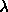

The survey coordinate system is a spherical
coordinate system with poles at ,
and ,
. The survey equator is thus a great circle
perpendicular to the J2000 celestial equator, intersecting it at
and . Lines of
constant are great circles perpendicular to the survey equator
and lines of constant  are small circles parallel to the
survey equator.  , is located at
, , with
increasing northward.
, is located at
, , with
increasing northward.
The survey area is divided into stripes, where each stripe is centered
along a line of constant , separated from the adjoining
stripe(s) by  . Each drift scan tracks a survey stripe,
offset by arcsec perpendicular to the stripe. Two scans (or
``strips''), one offset to the north and one to the south, are
required to fill a stripe.
The survey latitude tracked by stripe
n is given by
. Each drift scan tracks a survey stripe,
offset by arcsec perpendicular to the stripe. Two scans (or
``strips''), one offset to the north and one to the south, are
required to fill a stripe.
The survey latitude tracked by stripe
n is given by
in the Northern Galactic Hemisphere, and
for the three stripes in the Southern Galactic hemisphere.
These stripes are superimposed on a Galactic extinction map in
Figure 2 of york00.
The natural coordinate system to use for processing a given drift scan is the
great circle coordinate system for that stripe, , in which the
equator of the coordinate system is the great circle tracked by the scan.
This great circle is inclined by to the J2000
celestial
equator, with an ascending node of . at the
ascending node.  increases in the scan direction (east) and
increases in the scan direction (east) and  increases to the north. Each stripe has its own great circle coordinate
system.
increases to the north. Each stripe has its own great circle coordinate
system.
For reference, the equations to transform among the different coordinate systems are: